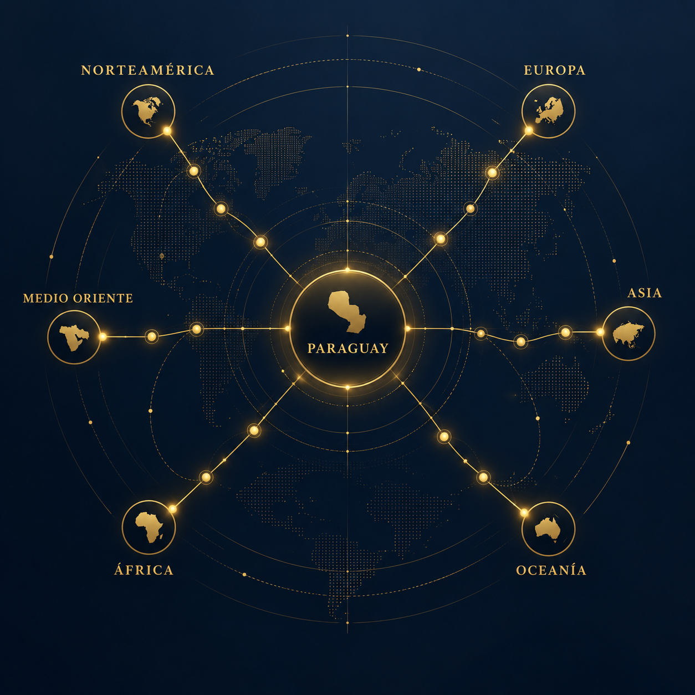
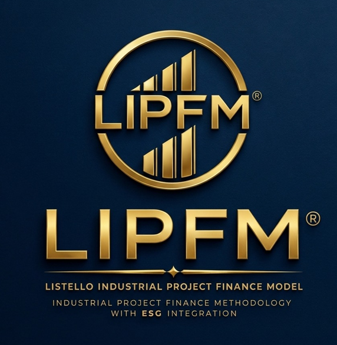
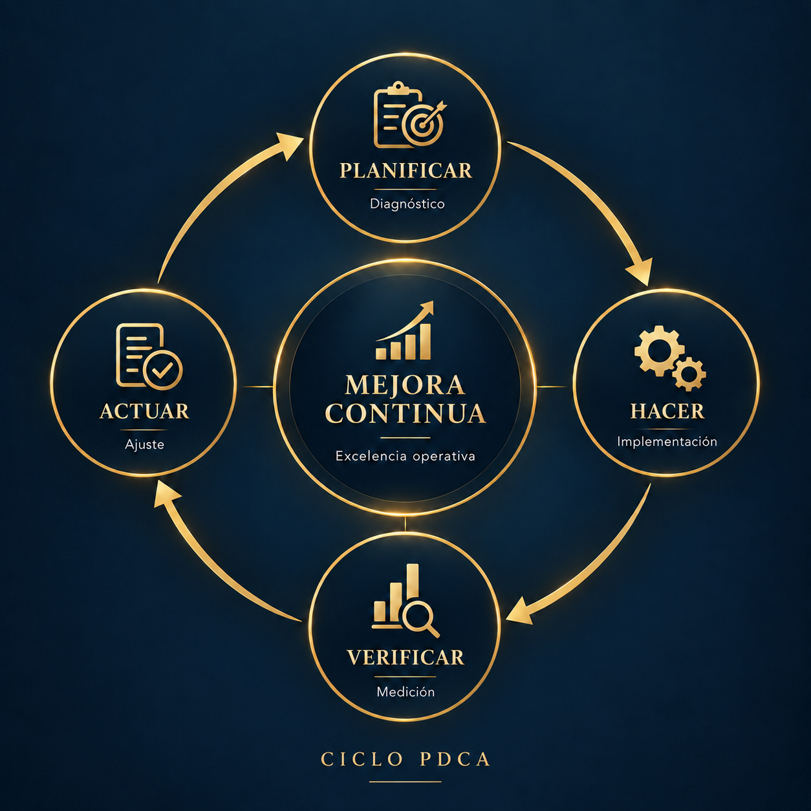
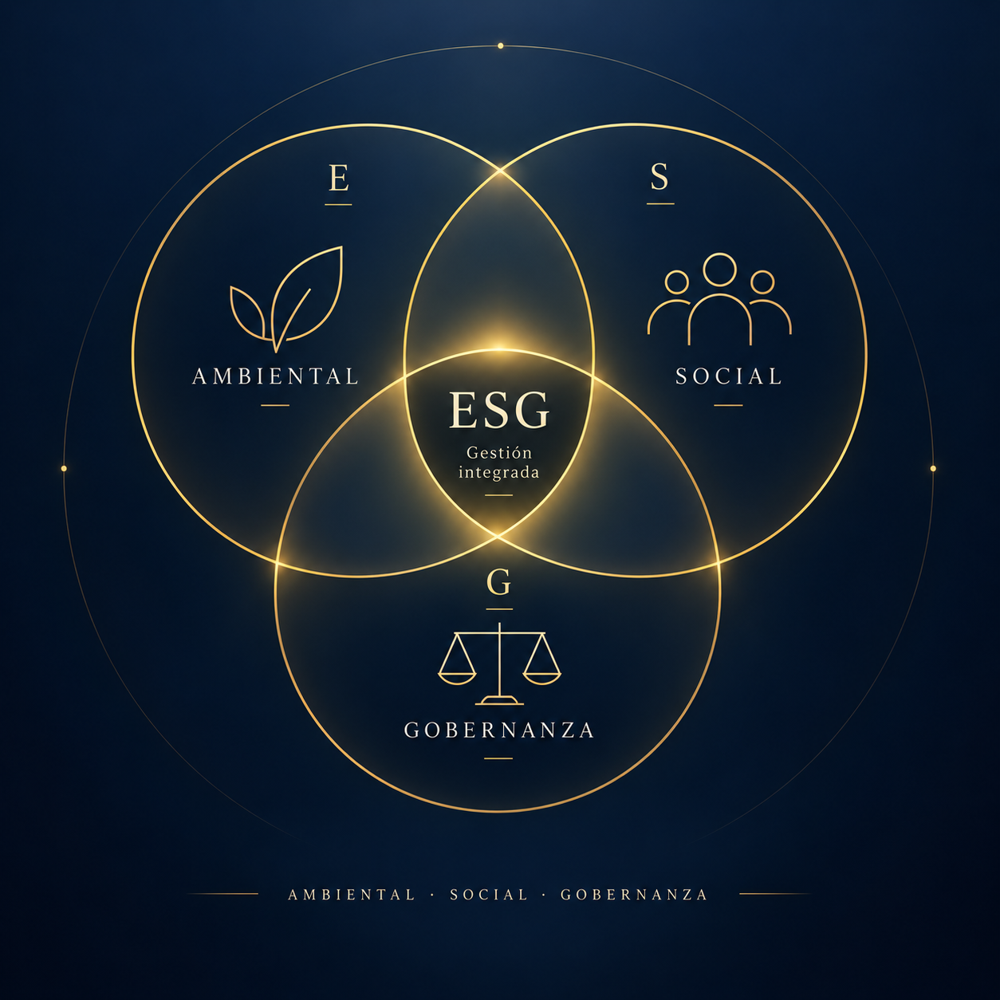
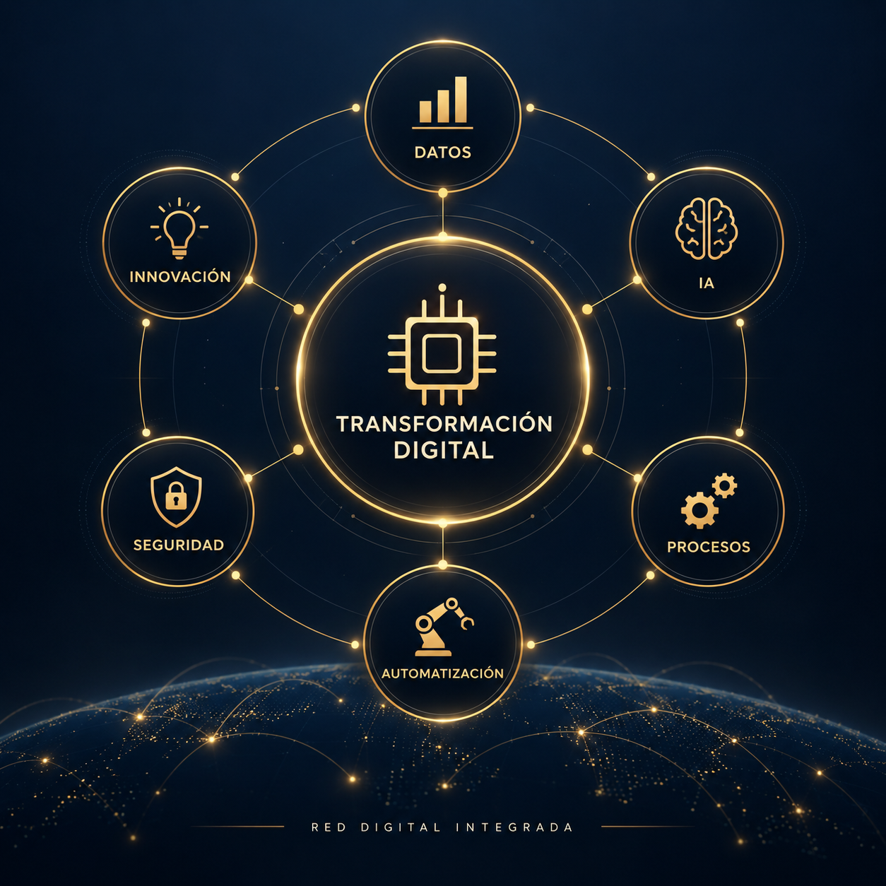

Créditos productivos
Financiación de proyectos y expansión empresarial, con estructuras adaptadas a cada operación, incluyendo períodos de gracia y plazos acordes al proyecto.
Acompañamos el patrimonio, la estrategia y el talento de familias empresarias y organizaciones en Paraguay.
Los capitales internacionales buscan oportunidades de inversión en empresas y proyectos productivos paraguayos. GL&AS Family Office & Business Consulting EAS, respaldada por nuestra trayectoria internacional y una red de consultoras asociadas en más de 40 países, conecta capital, empresas y proyectos con una visión de largo plazo.
Trabajamos exclusivamente con proyectos productivos y empresas con fundamentos sólidos, en todos los sectores de la economía.

Financiación de proyectos y expansión empresarial, con estructuras adaptadas a cada operación, incluyendo períodos de gracia y plazos acordes al proyecto.
Participación accionaria, ampliaciones de capital e incorporación de inversores como socios estratégicos.
Vinculación de empresas paraguayas con capital, tecnología, conocimiento y socios internacionales.
Estructuración de operaciones desde USD 1 millón, sujeta a características, solvencia, escala y viabilidad de cada proyecto.
Integramos capital internacional, estructuración, experiencia empresarial y profesionales especializados, acompañando cada operación desde su análisis hasta su ejecución.
En proyectos seleccionados, podemos participar en la fiscalización y seguimiento, contribuyendo a optimizar los costos de control y auditoría.
Acompañamos a empresas e inversores en todo el ciclo de un proyecto: identificación, estructuración, evaluación y ejecución, integrando visión estratégica, rigor técnico y acceso a capital.

Metodología propia para la estructuración, análisis y presentación de proyectos de inversión, integrando variables estratégicas, operativas, económicas y financieras para facilitar su evaluación y acceso a capital.
Acompañamos procesos de expansión territorial, diversificación, asociaciones, alianzas estratégicas, nuevos mercados y operaciones corporativas.
Ayudamos a mejorar la productividad, reducir costos, eliminar ineficiencias y aumentar la rentabilidad, a través de un enfoque integral que combina diagnóstico, rediseño de procesos y mejora continua.

Acompañamos a las empresas en la incorporación de prácticas ambientales, sociales y de gobernanza, generando valor sostenible, gestionando riesgos y accediendo a nuevas fuentes de financiamiento.

Acompañamos a pequeñas, medianas y grandes empresas en la gestión estratégica de su capital humano y la optimización de sus procesos operativos.
Somos una consultora integral de Recursos Humanos dedicada a potenciar el crecimiento empresarial a través del talento. Nuestra trayectoria abarca la administración masiva, operativa y la cobertura de puestos clave.
Contamos con un equipo de más de 10 asesores especializados en diversas verticales organizacionales, listos para brindar soluciones estratégicas adaptadas a las exigencias reales de tu mercado.
Asumimos la gestión integral de tu personal —desde la contratación hasta la supervisión directa— asegurando el cumplimiento estricto de la normativa laboral vigente en Paraguay.
Más de 15 años de trayectoria en el mercado laboral respaldan nuestros resultados.
Flexibilidad para adaptar cada servicio a la cultura y sector de tu empresa.
Garantía de cumplimiento riguroso de la legislación laboral vigente en Paraguay.
Ayudamos a las empresas a utilizar tecnología, datos e innovación para mejorar procesos, generar nuevos negocios y aumentar su competitividad.

Complete sus datos y el equipo de GL&AS podrá responder de acuerdo con el área de interés.